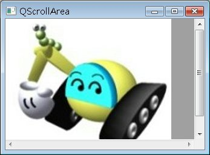

| 有些元件預設並沒有捲軸，例如QLabel，當視窗或父元件無法顯示其大小時，只會顯示部份區域，但不會出現捲軸，如果您希望這類元件可以出現捲軸，則可以使用QScrollArea。 QScrollArea包括三個部份，一個是水平捲軸、一個垂直捲軸、一個view port，view port為水平捲軸及垂直捲軸中的顯示區域。 在下面的這個範例程式中，使用QLabel並使用setPixmap()設定其顯示圖片，在 這邊使用QScrollArea的setWidget()將QLabel設定為view port中的顯示元件，並使用setHorizontalScrollBarPolicy()與setVerticalScrollBarPolicy ()設定總是顯示捲軸（Qt::ScrollBarAlwaysOn）： #include <QApplication> 您可以使用QScrollArea的viewport()方法取得水平、垂直捲軸間的view port，在這邊使用其setBackgroundRole()方法，設定view port所顯示元件外的區域顯示為灰色。 下圖為執行時的參考畫面，可以看到水平與垂直捲軸，而QLabel顯示圖片加上灰色區域即為view port區域：  |
|